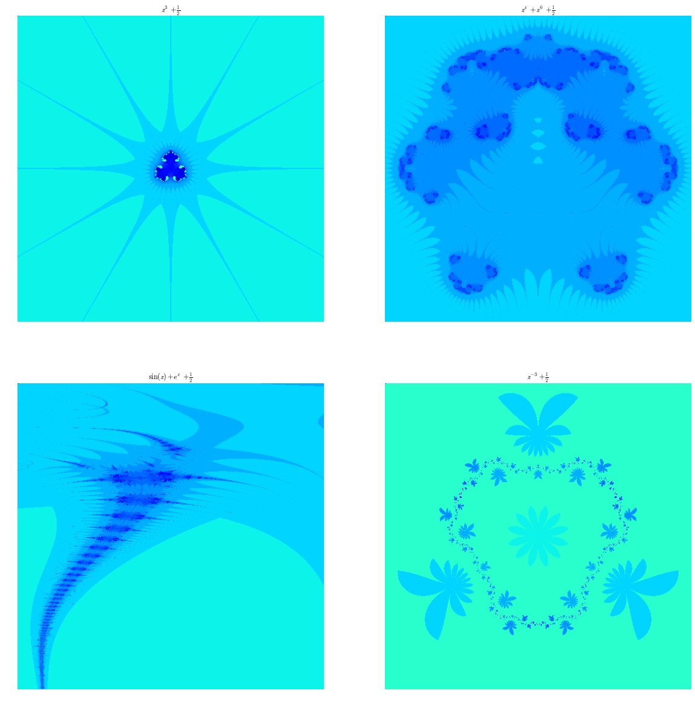

Biomorphes II : bestiaire
Contents
C'est la suite du billet dans lequel j'avais promis des images.
J'avais déjà écrit un billet du même genre ici. Mais, contrairement à ce que j'avais fait dans le billet sur l'ensemble de Mandelbrot, je vais générer la galerie d'images en Python, ce qui vous permettra de vous familiariser avec la commande subplot.
Pour rappel : je prends des points régulièrement répartis dans la région du plan complexe définie par :
Je considère pour chacun de ces points \(z\) la suite \((u_n)\) définie par \(u_{n+1} = F(u_n) \) que l'on choisit, on obtient des dessins assez variables, et assez fascinants :
Importation des modules
import numpy as np import matplotlib.pyplot as plt import matplotlib.image as mpimg # Dans Spyder, remplacez la commande qui suit par : plt.ion() mais, # elle est inutile pour ceux qui ont une console interactive # (c-à-d prompt qui ressemble à In [1]: et pas à >>> ) %matplotlib inline
Les différentes bestioles et leur habitat
Je crée les bestioles et les domaines de points \(\texttt{[Xmin,Xmax,Ymin,Ymax]}\) associés à chaque bestiole (domaine : zone du plan complexe où se cache la bête) :
def f(z): return z**3+0.5 def g(z): return z**z+z**6+ 0.5 def h(z): return np.sin(z)+np.exp(z)+0.5 def p(z): return z**(-3)+0.5
Comme j'ai en vue l'automatisation de la création des images, je vais consigner toutes mes fonctions dans une liste, puisque les listes sont itérables :
fonctions = [f,g,h,p]
De même, je crée les domaines relatifs à chaque fonction puis la liste de ces domaines :
dom_f = [-10,10,-10,10] dom_g = [-1.2,1.2,-1.2,1.2] dom_h = [0.5, 6, 1.7, 3.3] dom_p = [-2,2,-2,2] domaines = [dom_f, dom_g, dom_h, dom_p]
Je crée enfin la liste des tuples (fonction,domaine) :
bestioles = [ (fonctions[i], domaines[i]) for i in range(4)] bestioles # pour que vous voyiez la structure de la liste
[(<function __main__.f>, [-10, 10, -10, 10]), (<function __main__.g>, [-1.2, 1.2, -1.2, 1.2]), (<function __main__.h>, [0.5, 6, 1.7, 3.3]), (<function __main__.p>, [-2, 2, -2, 2])]
Et tant qu'à faire, la liste des noms des fonctions pour légender mes graphiques :
noms=[r'$z^3 + \frac{1}{2}$', r'$z^z+z^6+\frac{1}{2}$', r'$\sin(z) + e^z + \frac{1}{2}$', r'$z^{-3}+\frac{1}{2}$']
Fonction de calcul de la durée de vie
Ce qui est formidable, c'est que même les fonctions peuvent être prises comme variables d'entrée des fonctions :
def dureeDeVie(f,u): """ u : un complexe f : une fonction retourne le plus petit rang n inférieur ou égal à 10 pour lequel la partie réelle et la partie imaginaire excèdent 10 strictement en valeur absolue pour la suite récurrente de premier terme u et associée à la fonction f. Si cet entier n'existe pas, on le pose égal à 0. """ z = u # on peut faire les deux d'un coup : z,k = u,0 k = 0 while k<= 10 and (abs(z.imag)<=10 or abs(z.real)<=10): z=f(z) k+=1 if k==11: return 0 else: return k
Fonction de coloriage
def coloriage(f, xmin, xmax, ymin, ymax, nx,ny,ax): """ je n'explique pas pour le moment ... """ X = np.linspace(xmin,xmax,nx) # je crée les subdivisons le long des X Y = np.linspace(ymax,ymin,ny) # idem le long des Y A = np.zeros((ny,nx)) # J'initialise un tableau de taille ny x nx for i in range(0,ny): for j in range(0,nx): A[i,j]= dureeDeVie(f,X[i]+1j*Y[j]) # je place en position [i,j] du tableau la durée de vie du germe A=12-A # Comme je veux colorier dans des teintes de bleu, je fais des A[0,0]=0 # petites transformations sur les coefficients de A A[1,1]=30 ax.axis('off') ax.imshow(A)
Génération de la galerie
Il n'y a plus qu'à faire la boucle sur les bestioles :
# nombre de points dans le domaine nx = 500 ny = 500 fig = plt.figure(figsize=(20,20)) ; # je dimensionne le dessin k=1 for bestiole in bestioles: # je prends les bestioles une par une fonction = bestiole[0] (xmin,xmax,ymin,ymax) = bestiole[1] ax = fig.add_subplot(220+k) # je crée un sous-graphique plt.title(noms[k-1]) # je lui mets un titre plt.axis('equal') # repère orthonormé coloriage(fonction, xmin, xmax, ymin, ymax, nx,ny,ax) k+=1